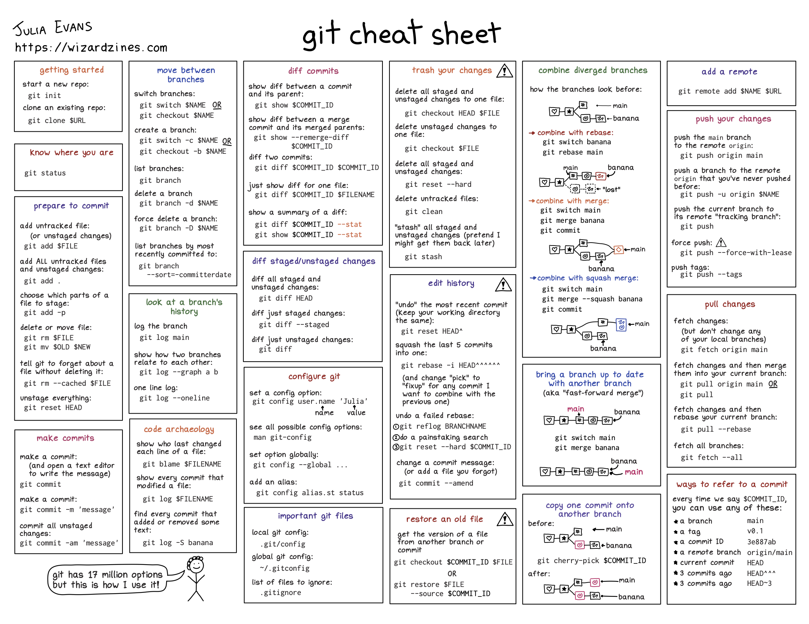

Glossário do versionamento
Uma das maiores dificuldades quando começamos utilizar versionamento em nossos trabalhos é a quantidade de termos técnicos utilizados nessa área. Pull, push, commit, pull request, merge, fast forward, main/origin e por aí vai.
Por isso, o objetivo dessa seção é compilar um conjunto de termos e seus significados para facilitar o entendimento dos procedimentos de versionamento. Muitos dos significados são retirados do ótimo artigo Pedro Braga na Methods in Ecology and Evolution (Braga et al. (2023)). Nessa seção você pode encontrar os principais termos utilizados em trabalhos que envolvem versionamento. Para sugestões, correções ou adições de termos abra um Issue ou submeta um pull request. Os termos estão colocados em inglês pois é a maneira mais comum que vocês irão encontrar na documentação do Git e do GitHub.
Glossário
- Repository: Um conjunto de arquivos que é monitorado pelo Git (nossa ferramenta de versionamento). Os repositórios podem ser tanto remotos quanto locais, dependendo de onde eles estão (respectivamente, em um serviço de hospedagem remoto, como o GitHub ou/e no seu computador)
- Branch: Representa o caminho de desenvolvimento do projeto. Repositórios podem ter um único, geralmente denominado main ou master, ou múltiplos branches. Esses multiplos branches podem representar caminhos divergentes de um dado projeto (por exemplo, uma modificação em análises, um colaborador que está testando uma mudança em algum aspecto do projeto, etc.). O uso prático dos branches está ilustrado em Trabalho colaborativo
- Commit: Função do Git que possibilita registrar “fotografias” que representam diferentes momentos do desenvolvimento do projeto. No versionamento com o Git os commits possibilitam a identificação e o rastreamento das modificações realizadas no repositório. O uso prático do commit está ilustrado em ABC do versionamento
- Push e Pull:
- Pull request:
- Merge:
- Release:
- Head: Termo utilizado para representar qual o local atual que você se encontra no histórico de desenvolvimento do seu repositório.
Guia resumido de funções do git
Aqui você pode encontrar uma pequena cola com algumas das principais funções do git. Este material foi produzido por Julia Evans
References
Braga, Pedro Henrique Pereira, Katherine Hébert, Emma J. Hudgins, Eric R. Scott, Brandon P. M. Edwards, Luna L. Sánchez Reyes, Matthew J. Grainger, et al. 2023. “Not Just for Programmers: How GitHub Can Accelerate Collaborative and Reproducible Research in Ecology and Evolution.” Methods in Ecology and Evolution n/a (n/a). https://doi.org/10.1111/2041-210X.14108.